Property Editor
Table of Contents
The Property Editor lists the input and output "parameters" of the node selected in the Layer Editor, Hierarchy Editor or Content Editor. It also displays the properties of selections in other editors, such as the Animation Editor or Project and Scene Data. Only the properties of Nodes can be bound to other nodes or can be animated. Other properties shown in the Property Editor can only be viewed or edited.
The following screenshots shows the properties of a Rectangle node:
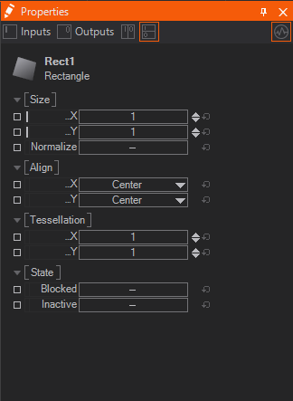
The top row of buttons selects whether only input, only output or both property types in a split view should be shown. The button on the top right is the Monitor Values button. When activated, the user interface will update the shown values every frame. This causes a small performance penalty but is great for understanding what is happening in a scene. When deactivated, the values are only updated when the selection changes or the user chooses another of the four view buttons (input, output, splits).
You can select properties by clicking them. When holding SHIFT while doing this you can select multiple properties. Using CTRL + Q selects all properties in the same Category or Property Group. Then you can either click and hold the selected properties to bring up their Context Menu and manipulate all of them at once or use an according shortcut for this.
Favored
Below the icon, name, and type of the Node, the properties are listed, grouped in categories.
A property is favored to indicate that it is among the ones that are most often used by a typical user. This is visualized by a light gray bar on the left of the name column (in this case only the X/Y properties). The Properties Editor always shows all available properties, the favored tag is just applied to the Quick-Properties Editor available in the Hierarchy Editor on hovering the right bottom of a Node.

By clicking on the small down-arrow the Quick-Properties Editor will come up.
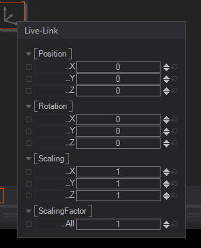
To mark a property as favored, double click on the small, left-most column (not the little box at the very left!). This column is only present when the selection has been done in the Content Editor. Alternatively you can hit F to favor a property.
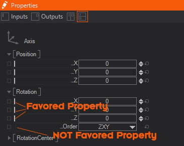
If a hierarchy node is selected in the Hierarchy Editor, all favored properties of all content nodes bound to that hierarchy node are shown as well. For example, the Text property of a Text Provider attached to a Text Renderer is shown when the text node is selected.
Editing Values
Each row in the Properties Editor represents a single property. In the middle are the two rows for the name of the property and its current value. The value can be changed by double click on the value row or by using the arrows to the right. The bent arrow resets a property to the default value. One can also click and drag the value row to decrease a value by going to the left or increase it by going to the right. The CTRL, ALT and SHIFT modifier keys can be used to slow this down or speed it up, like the following:
| Keys | Effect |
|---|---|
| None | Normal Editing Speed for this Property |
| Ctrl | Normal Speed x0.1 |
| Ctrl + Shift | Normal Speed x0.01 |
| Alt | Normal Speed x10 |
| Alt + Shift | Normal Speed x100 |
During this interactive editing with , a click or pressing Esc will reset the property to the last start value. TAB navigates through all editable properties.
Integer values when entered with a leading 0x or a leading # are interpreted in hexadecimal. Examples: 0xA5=165, #400=1024
Editing Color Values
Color Values can be changed in several ways and somehow exceed the ways you can change values of other types. You may choose whichever is most comfortable. By clicking the downwards arrow of the Value Column a small window opens, where you can edit the current property.

On the top, you can change the current Hue of the color with the help of the Color Circle on the left. Moreover you can control its Saturation and Lightness with the Color Square on the right. Below you see the RGBA values which you can change to any other integer value in the Property Editor. Next to it, there is the representation in HSL which works the same.
On the right, the Color Preview shows two colors defined as a square with an inner and outer area. The color in the outer area is the formerly picked color whereas the inner square shows you a preview of the currently picked color. You can drag and drop both squares to the bottom of the window and add them to the Color Presets collection. The Color Presets shows the most recent colors picked, they can be overwritten or deleted by dragging them into the bin.
Whenever you change one of the representations, not only the Renderer updates the Color and already takes notice of that but also all other representations inside this window will update their values.
Colorpicker / Pixelsnoop
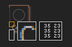
The last way to change a color is the Color Picker. You can activate the Color Snoop mode by clicking and dragging the colored rectangle on the left of the Value Column. Now you see the Color Picker (see above image) instead of your cursor. With that, you can read out any Pixel rendered on your Monitor.
The most left rectangle is filled with the currently snooped color. The Square in the middle works as a magnifier of the snooped area (top left square) and shows you a better representation of the space around your cursor. On the right you see the RGB values - one column uses the interval 0-255 and the other as Hexadecimal numbers. When
By using the Arrow Keys while snooping you can pan the cursor pixel-wise.
Editing Gradients
Gradients are similar to Color Values, though they can define a gradual change between two or even more color values and based on these create a texture. You can choose one of some presets by clicking on the downwards arrow in the value column.
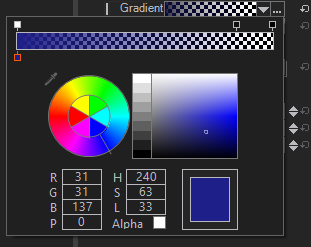
Click on the dots to the right of it to open the Gradient Editor. It looks similar to the Color Editor but has an additional Gradient on top of the Window. Here you can define Keys for both Color (bottom) and Alpha (top). To create a Key click directly below or above the Gradient respectively. You can move the Keys around by either dragging them near the Gradient or by changing its p-Value (position). Click on a Key to select and edit it. By dragging a Key away from the Gradient you can delete it.
Changing a Color Key's Value works the same as described above. Changing an Alpha Value works very similar, but you can only define the Lightness - 0 means no opacity and 255 means fully opaque. By checking the Alpha-Flag the Gradient only outputs an Alpha Channel and therefore only Alpha Keys are being shown. The Color Picker feature is also available by clicking on the  -Icon on the top left.
-Icon on the top left.
Binding Values
Instead of manually setting a property to a specific value, it can be bound to the Output Property of another node. Click and drag the name row entry of the property to another node in the Layer Editor, Hierarchy Editor or Content Editor. When releasing , a list of compatible output properties will appear if multiple compatible output properties exist; otherwise the binding will be established immediately.
An Input property is bound to an Output property, not the other way round. Think: This gets changed, by that.
There are two other slightly different possibilities to bind properties:
- Drag the input property with to another node: this will provide a pop-up with all available output properties. There you can select the desired output.
- Drag the input property with to another node and wait until the Property Editor displays this node. With pressed move to the Output tab of the Property Editor and drop the input property on one of the output properties.
As long as an Input Property is bound, it will update its value whenever the output property changes. For example, the X-Rotation property of a Axis node can be bound to a Mover node to continuously have objects under the Axis rotate around the X-axis. Binding of node properties is at the heart of Ventuz and allows the creation of very complex logic without having to program a single line of code.
For more information, see Nodes and Bindings.
Keyframe Animation
Instead of binding a property, it can also be animated by a Keyframe Animation. To animate a property, either drag it to the Animation Editor or press CTRL while clicking on the property name. For more information on animation, see Animation and State Engine.
Animate Floating Point Numbers
Floating Point Numbers can be animated directly inside the Property Editor using a generic animation similar to those of the Mover Nodes. All other value types need to be bound to either the Output of another Node or to a Keyframe Animation's channel. To create a Floating Point Animation click the button on the right of the property's value's box (it appears when hovering over the property). In the appearing dropdown you can choose a function for the animation and one of several presets for it. See the Mover Node reference for more information on the different functions.
Note that this animation will work like a Mover Node set to Absolute Mode. Thus it is animating synchronously in a cluster. If you need other modes click the extract button next to the property. It appears as soon as you have configured an animation in the Dropdown.
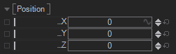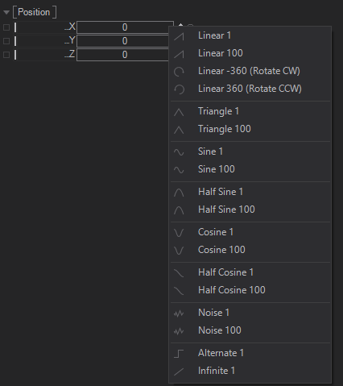
To change the values you can click to uncollapse the property. The Type changes the function of the animation, Min and Max adjust the range, Duration will change the time for one iteration of the animation and Offset defines an offset for the start of the animation.
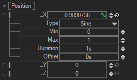
The Infinite function animates the floating point number in relation to the Cluster Clock. On systems that need to run in long-term this will eventually get inaccurate due to the precision of the floating point numbers.
Data bindings
Similar to the animated binding, properties can be added to Project, Scene and Animation Data by either draging them to the desired editor, using the context menu entries or the shortcuts CTRL SHIFT and clicking to add a property to Animation Data and CTRL ALT SHIFT and clicking to add a property to Scene Data.
Events
Most properties represent values that influence or are generated by a node. A number of nodes also generate or listen to events that fire when a certain situation arises. The following screenshot of the Touch Button node shows both input and output properties and events.
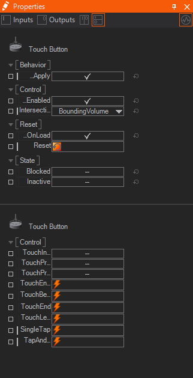
The red square next to the Reset property can be clicked to fire the Reset event, in this case causing the button to reset to its internal state. The output events on the other hand fire when a certain situation occurs, for example, the SingleTap event is fired when the user presses and releases the button within a short timeframe. Apart from triggering the action, the button is intended for, this could, for example, also be used to animate the color when the button is pressed to give the user a visual feedback.
Exposing
The small square on the left indicates the exposure state of the property. By double-clicking on it or hitting the X key when the properties are selected, the user can assign a name, category and the default value of how the property should appear on the parent container level.
Exposing Properties
While a Container or Layer is primarily designed to hide the complexity of its implementation, there are usually some properties of the encapsulated nodes that need to be adjustable from outside the Container. A button may allow the user to change its color and label, a movie player my require a file name to work correctly and so on.
Any input or output property of a node inside a Layer or Container can be made available on the outside as a property of the Container itself by exposing it.
To expose a property, click on the name of the property in the Property Editor and choose Expose/Edit... from the appearing context menu. The name and category of the property, as it appears on the Layer or Container, can either be kept the same as on the original node or be reassigned in the dialog that opens. Press OK and the square to the left of the property name will change to green, symbolizing that this is now an exposed property. Note that exposed property names have to be unique within a container. Exposing two properties with the same name will not only confuse other Ventuz operators but can also disrupt the binding logic.
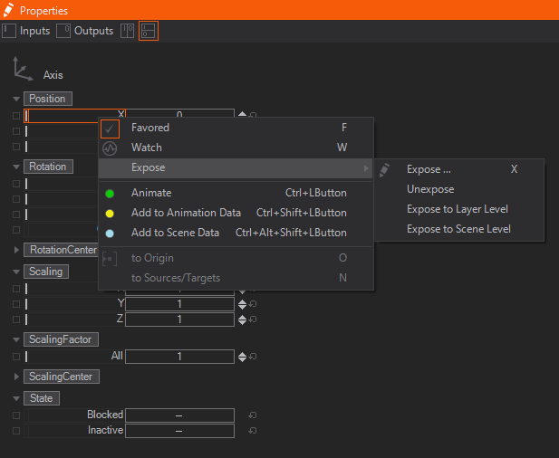
To quickly expose a property without changing its name or category, click the small square to the left of the property. To quickly "un-expose" a property, click on the square. A double-click will bring up the Expose dialog.
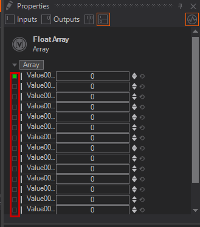
Since Ventuz 5 we introduced a new level in the Scene with Layers. To make exposing a little more handy properties can be exposed to Layer Level or Scene Level directly from the context menu. Pressing the on a category also allows exposing all properties inside that category to a certain level in the scene or to Scene Data to control them from Ventuz Director.
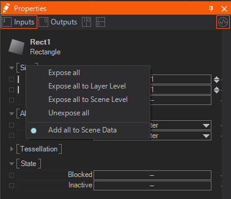
Exposed input and output properties of a Layer or Container can be seen either when selecting the node on its parent level or by going into the Layer or Container and deselecting everything.
Property Tabs
With Ventuz 6.6 we introduced Property Tabs. These allow to sort your properties into custom tabs.
To do this simply doubleclick the expose button and a new window will pop up.
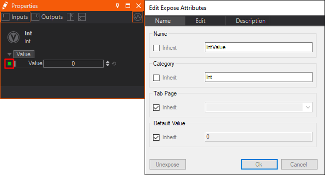
If inheriting is enabled the exposing will appear on the same tab like the exposed property. To change that uncheck the according checkbox. When changing the name you can also use the dropdown to choose from a list of already present property tabs of the current container.
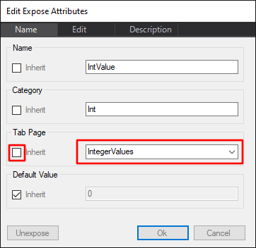
After typing in the name of the tab you can hit OK, and now you can find the new tab on the top of the Properties Editor at the according container.
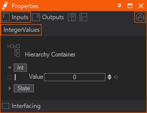
If you want to add multiple exposed parameters to one tab, you need to expose the needed properties on the node itself first. Then jump up one level and mark all of them with shift + Left click .
Right click one of the selected items and add them to an existing tab, create a new one or even remove it from the current tab. 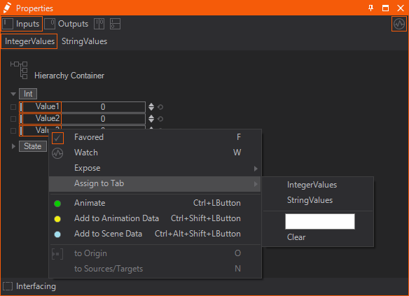
This only works on selections on the container/layer - not on the exposing node itself.
The selected tab will always be highlighted in Orange.
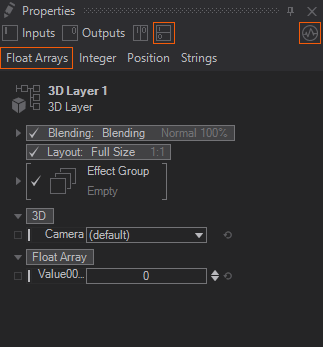
Data items with no allocated tab, will be always displayed. Regardless of the tab selected.
Hidden number Sorting
It is also possible to sort these Property Tabs by hidden numbers instead of the Alphabet.
To do this you only need to name your Tabs by starting with a number. This number will not be displayed.
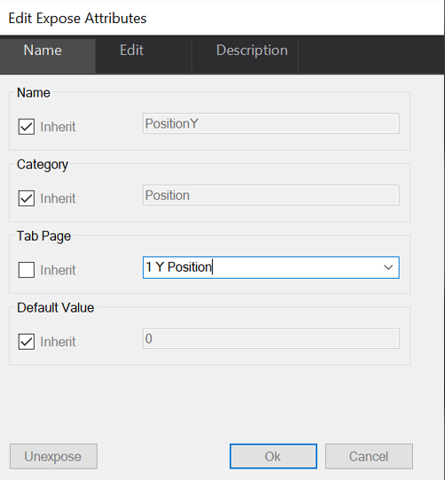 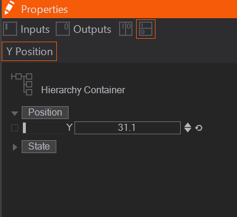
This number will keep the Property Tab up front. Even if we add another tab that is starting with an A for example.
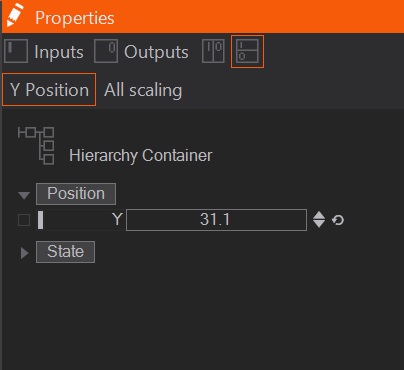
Navigation
If properties are exposed or bound to other nodes, it might be necessary to see where a value actually comes from. It is possible to navigate to these source nodes via a context menu in the Property Editor.
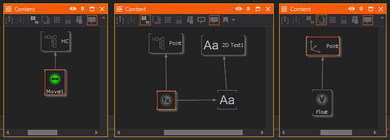
If one wants to navigate the node that exposes its properties to the higher container level, a long click on the interesting property will display a context menu. Not all menu entries are enabled. This depends on the exposing level and the binding state of the selected property. For the navigation in an Exposing hierarchy the menu entries to Origin and to Origin Root are useful. to Origin navigates inside a container to the node that exposes the selected property. This can be any of the Ventuz nodes. to Origin Root navigates to the root of an exposing chain over multiple container nodes. In this case, the destination node can be any of the Ventuz nodes except the container nodes.
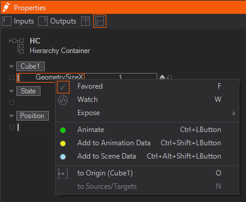
If an input property is bound, the menu entry to Source Node will navigate to the node which is bound to the selected property. The navigation to Property is only possible if the Favored option is enabled. In this case, a Hierarchy node inherits the favored input properties of all bound nodes for display in the Property Editor. Selecting to Property on such an inherited property will navigate to the real owner of this property.
Folding/Collapsing
A category of properties (for example the "Size" category in the above screenshot) can be collapsed by right-clicking on its name.
Watching
Properties can be watched by hitting the W key. This enables you to track and change the current value in the Watches Editor. Additionally as soon as you watch a value the Performance Statistics are shown with the Watches option enabled.
Custom Model
Some Nodes like Expression Nodes, OSC Nodes or DMX Nodes can have a user-defined number of Properties. The ability to add or remove properties is called a Custom Model. A click on the button at the end of the properties list brings up a drop down with a list of available property types. The available types depend on the node. Properties can be renamed by double on the property name label, or select the property and press F2.
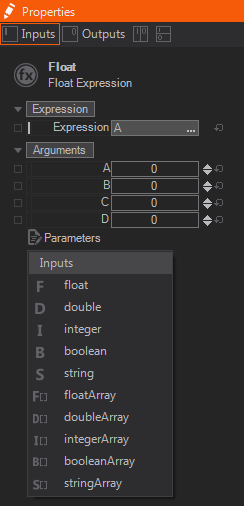
Color Highlights
In some of the above screenshots, one of the boxes containing the name or value of a property has a different color than the rest:
- Green: The property is bound to an Animation Channel. Any changes done to this property will be lost when the animation is played.
- Light Red: The string property is currently linked to the Text Editor window. Instead of changing its value in the Property Editor, use the Text Editor instead.
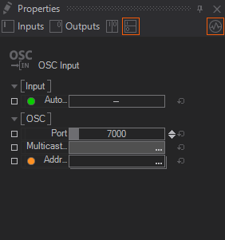